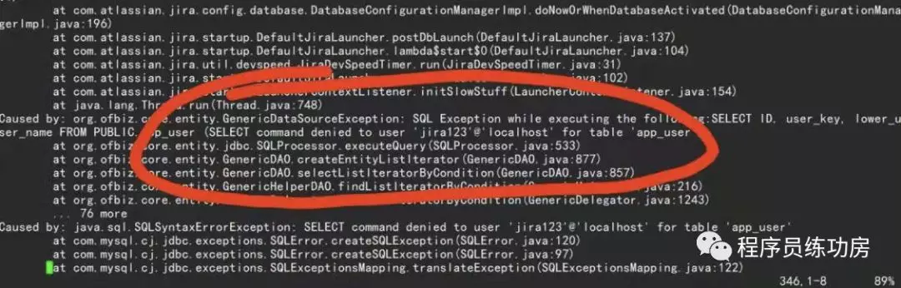
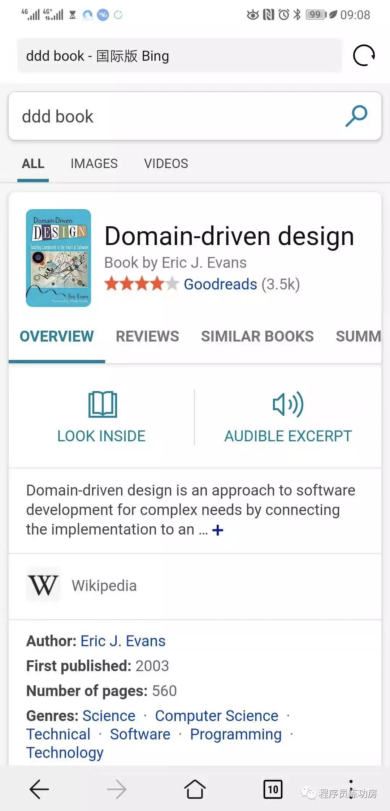

不当伸手党，从抛弃百度开始
注：本文转载于2019年8月26日，转载已获得作者授权。
有个群里的同学给我反馈，“伸手党”这个词不能滥用，不然很伤人。我虚心接受这个反馈。古人讲闻道有先后术业有专攻，不能因为人家问的问题我觉得很简单就说人家伸手党，这对人不厚道。
但是真的就有很多伸手党……比如某群里有人问某某书有没有电子书，唉，我就先不说传播盗版电子书很不地道吧，这种电子书不是找找就有么，为啥要在群里问？
伸手党伸到这个程度，我也真是没话说了……
（顺便说啊，www.justfuckinggoogleit.com 这个网站真的可以解决超多问题，拿走不谢😏）
然后JIRA群的WJ同学遇到了技术问题，在MySQL上面装JIRA报了错，在群里贴了个stack trace，半天也没得到答案。我扫了一眼，看见这么一句

我真的是连脑子都没过，就等滴滴车到的一分钟里搜了一下，
这答案就摆在搜索引擎第一条的问题，非要这么问，到底是图个啥？我感到非常困惑。所以我就问了WJ同学。WJ同学给我的答案是：
百度了 但是关键字不对 的确没搜到您这个
WJ同学
于是我突然意识到，还有很多同学不知道一个基本的事实：
百度不是搜索引擎！
百度不是搜索引擎！！
百度不是搜索引擎！！！
（重要的事一定要说三遍！加黑！加大！加咆哮体！）
不信的话可以自己实验一下。我用同样的关键字“jira mysql app_user select command denied”在百度搜了一把，我有两个观察。
第一，百度完全不搜任何英文网站，尽管我输入的都是英文。
第二，因为它完全不搜任何英文网站，它的结果来源……好吧，没有对CSDN不敬的意思，毕竟我也是CSDN的老员工，不过读者可以打开第一条搜索结果看看，自己评判一下，这位同学有把问题讲清楚的能力么？
这就是百度的搜索能力。如果世界上只剩下百度这一个搜索引擎，我可能也解决不了WJ同学的这个问题。（当然更可能我会直接去StackOverflow和Atlanssian官网，总比用百度好。）
百度不是搜索引擎！（重要的事再说一遍）
百度按照别人付多少钱来判断把内容放在搜索结果的什么位置。这个东西不叫搜索引擎。这个东西张朝阳2000年就做过了，叫分类目录。在搜狐之前还有个更牛逼的分类目录网站，叫雅虎。2001年的时候雅虎被一家做搜索引擎的公司给严重打击了，这家公司叫Google。
百度开了历史十八年倒车，还好意思说自己是Google的同行？
所以啊，搞技术的人，怎么能开始靠谱起来呢？第一步就是，从现在开始，别再用百度了。就算你不知道怎么科学上网（当然我很想说，连科学上网那点困难都懒得解决，这搞技术也没啥前途），Bing也可以用用。
就，Bing起码是个搜索引擎。只要是个搜索引擎，90%的技术问题都还是能找到答案的。一般来说答案就在第一页。比如说，前两天我还说一个同学伸手党，是怎么回事呢，这个同学问，“学DDD看哪一本书比较好”，我说我最喜欢这种问题了。

答案就在第一条，还给你大图，生怕你看不清。但凡只要是个搜索引擎，基本上都这效果。
然而，百度不是搜索引擎！！！
你和大神之间的差距，很可能只是你用百度。